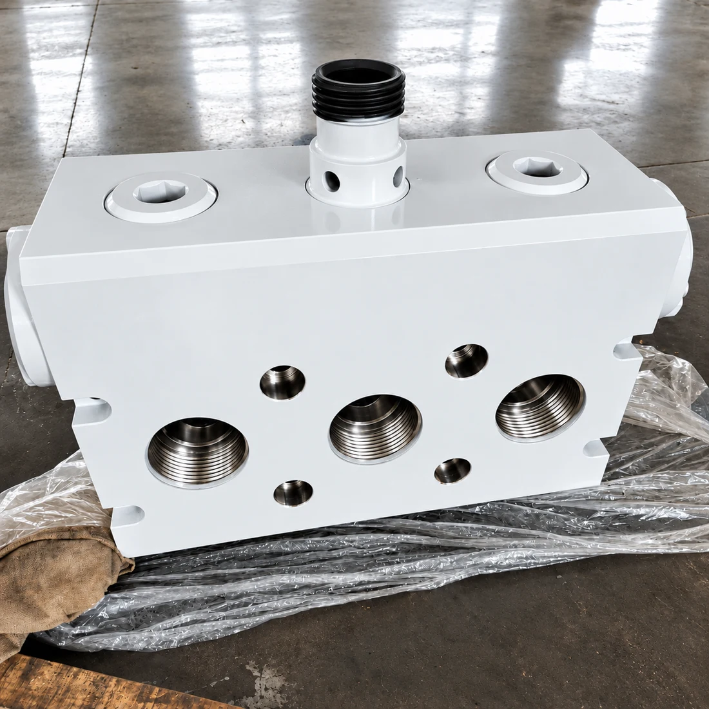
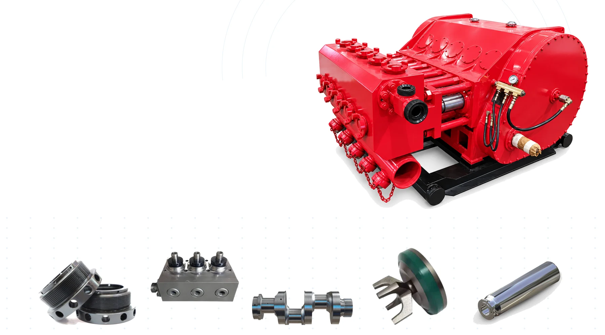
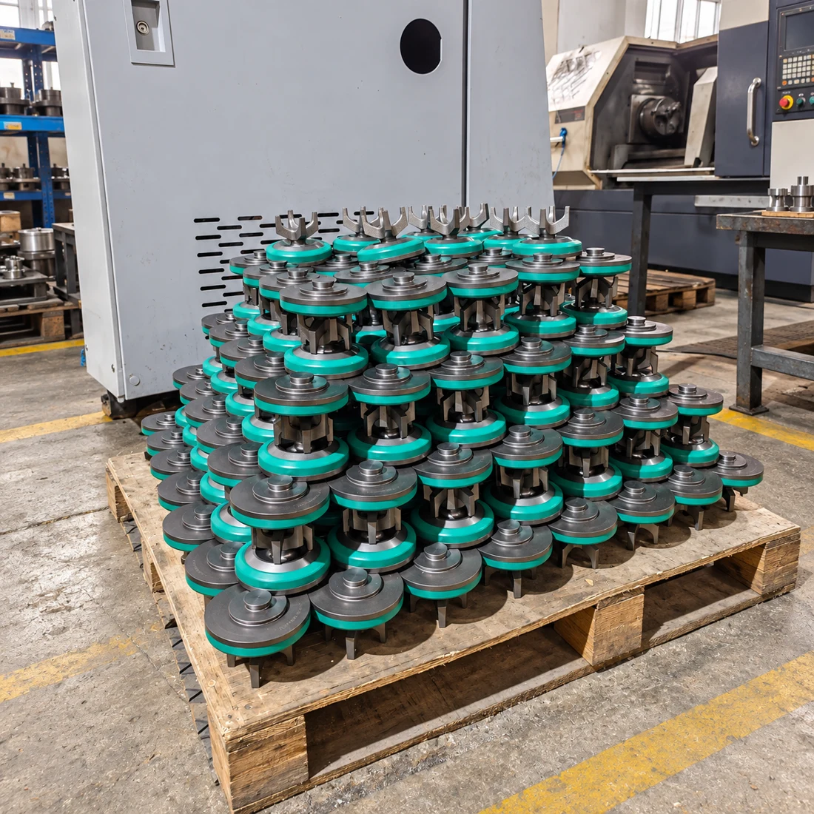
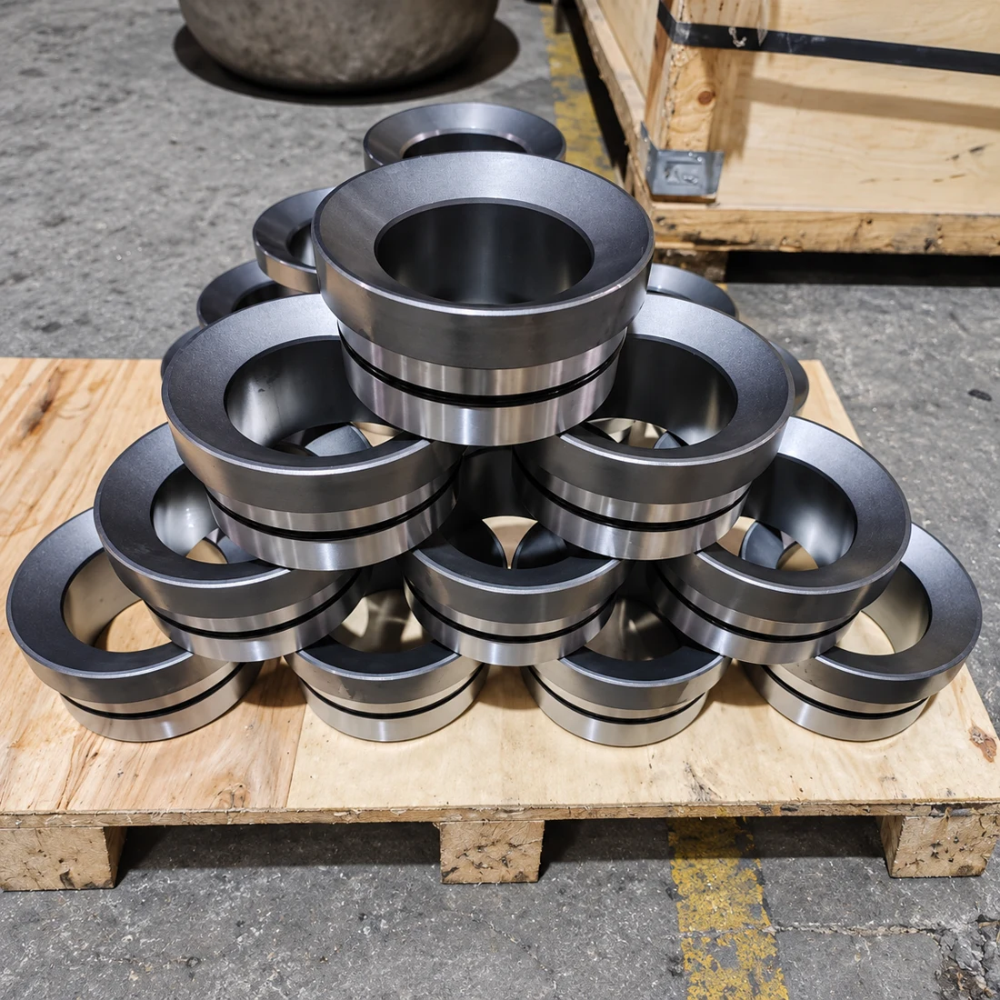
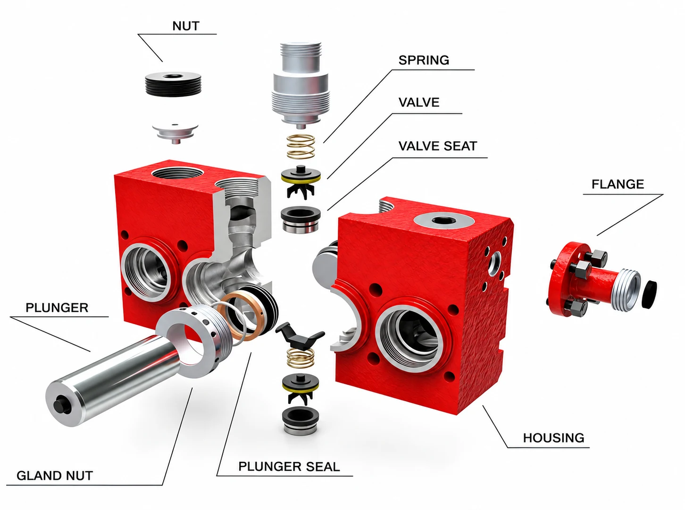
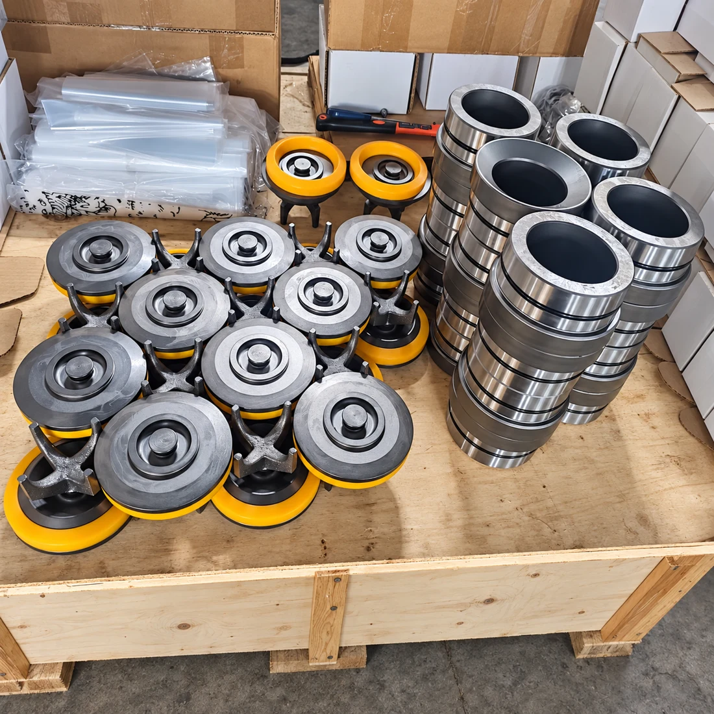
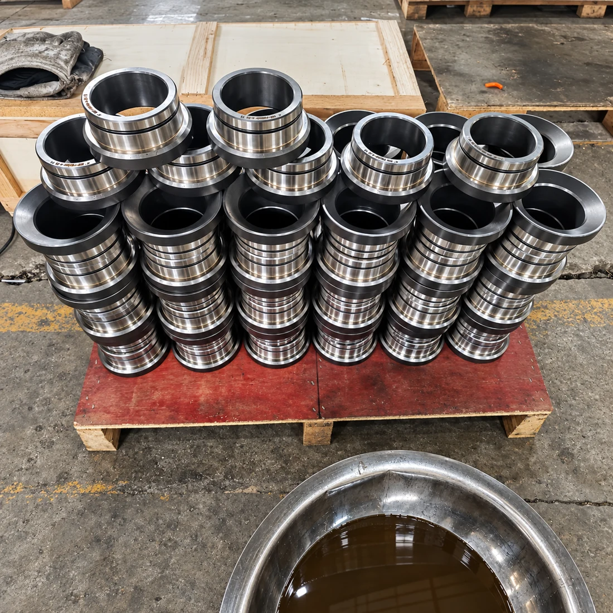
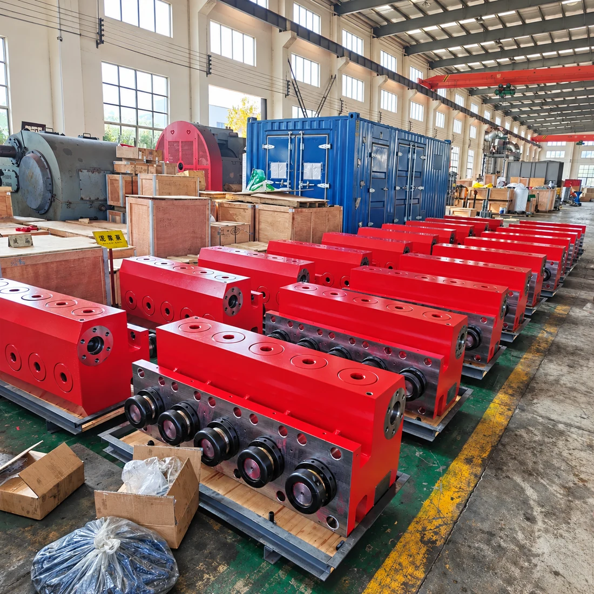

Fluid-End Components
Fluid Ends & Blocks
Fluid-end assemblies and fluid-end blocks
Send your pump model
FRACTURING & WELL-SERVICE EQUIPMENT
Replacement parts for STP, QWS and TWS fracturing and well-service pumps.
Fluid ends, valves, seats, plungers, packing and power-end components — matched to your equipment.
FLUID ENDS · CONSUMABLES · POWER-END PARTS
Parts for supported pump models
Manufactured to drawings or samples
Consumables and precision components
01 / REPLACEMENT COMPONENTS
From fluid-end assemblies to everyday consumables and power-end components, organize the parts you need for routine maintenance or a major overhaul.

Fluid-end assemblies and fluid-end blocks
Send your pump model
Valves, valve seats, springs and retainers
Check availability
Confirm the correct replacement with your part number or drawing.
Match your partCOMPLETE SUPPLY RANGE
EXPLORE / EQUIPMENT & SPARE PARTS
Browse by equipment type, explore model details, then send your requirements for a matched quotation.
17 products · View details or request a quote


PS series disc brake systems and matching replacement components.


Water-cooled auxiliary brake assemblies and replacement parts.


No matching products in this category. Try All Products or another model name.
Confirm the full equipment model, part number and configuration before ordering. Need help identifying a part? Send your nameplate, drawings or photos to our team.
02 / PUMP COMPATIBILITY
We supply replacement parts for STP350, STP600, STP800, STP1000, STP1600, STP2000, QWS2250, QWS2500, SPM TWS600, TWS600S, TWS600S HD, TWS2250 and TWS2500 pumps.
STP350 · STP600 · STP800
STP1000 · STP1600 · STP2000
QWS2250 · QWS2500
SPM TWS600 · TWS600S · TWS600S HD
TWS2250 · TWS2500
03 / FLUID-END COMPONENT REFERENCE
Use your pump model, part number and available drawings to help us identify the required replacement parts.



04 / MAINTENANCE SUPPLY
Common consumable and replacement parts are available from stock for selected pump models, including valves, valve seats, packing sets, seals, O-rings, gaskets and overhaul kits.
Please send the pump model, part number and required quantity to confirm current availability.
05 / STANDARD & CUSTOM MANUFACTURING
We manufacture standard and customized pump parts with CNC machining, material inspection, heat treatment and dimensional inspection. Pressure testing is available for applicable fluid-end components.
Parts can be manufactured according to your drawings or samples. Send us the pump model, drawing number or part number for a quotation.

Pressure testing is available for applicable fluid-end components.
PRATT OIL / YOUR PARTS SUPPLY PARTNER
Pratt Oil focuses on replacement parts for oilfield drilling, fracturing, cementing and well-service equipment.
We understand that pump maintenance often requires standard consumable parts, precision-machined components and specially manufactured parts in the same order.
Our team can help verify part numbers, check drawings, organize different products in one shipment and support both routine maintenance and major overhaul projects.
LET’S MATCH YOUR PUMP PARTS
Looking for replacement parts for an STP, QWS or TWS pump?
Send us the pump model, part number, required quantity and available photos or drawings. We will check the specifications and prepare a quotation according to your requirements.
Jinan Pratt Oil Equipment Co., Ltd.